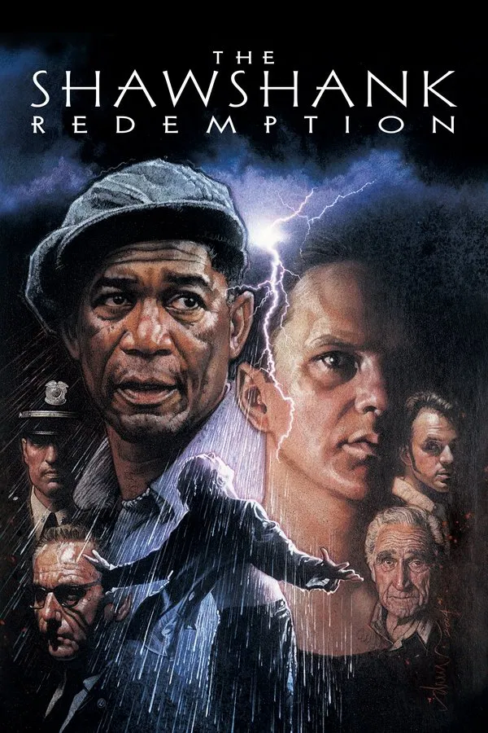
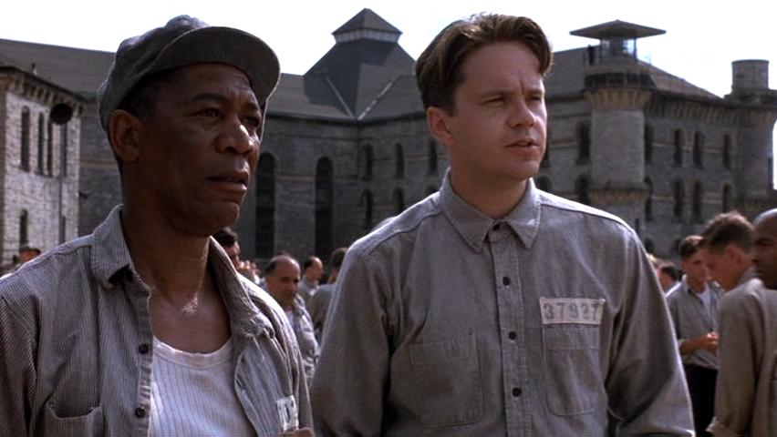
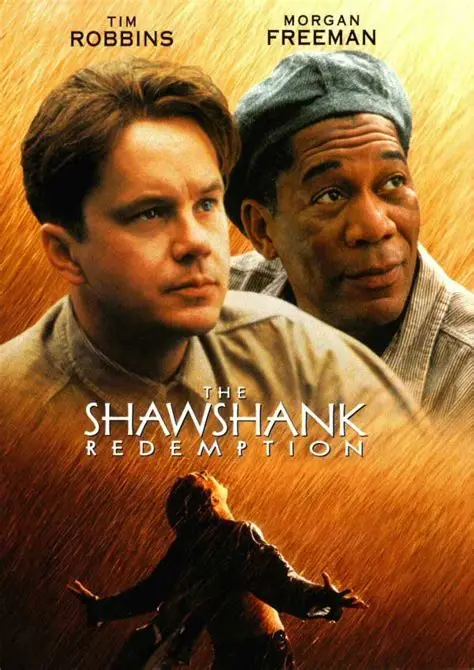

Andy Dufresne, karısını ve onun sevgilisini öldürmekle suçlanıp ömür boyu hapse mahkûm edilir. Shawshank Hapishanesi'nde yıllar geçtikçe zekâsı, sabrı ve dürüstlüğüyle hem gardiyanların hem mahkûmların saygısını kazanır. En yakın dostu Red ile güçlü bir bağ kurar. Andy, hapishane kütüphanesini geliştirir ve mali konularda gardiyanlara yardım eder. Ancak yıllar süren sessiz planlamanın ardından, özgürlüğüne kavuşmak için zekice bir kaçış gerçekleştirir.


